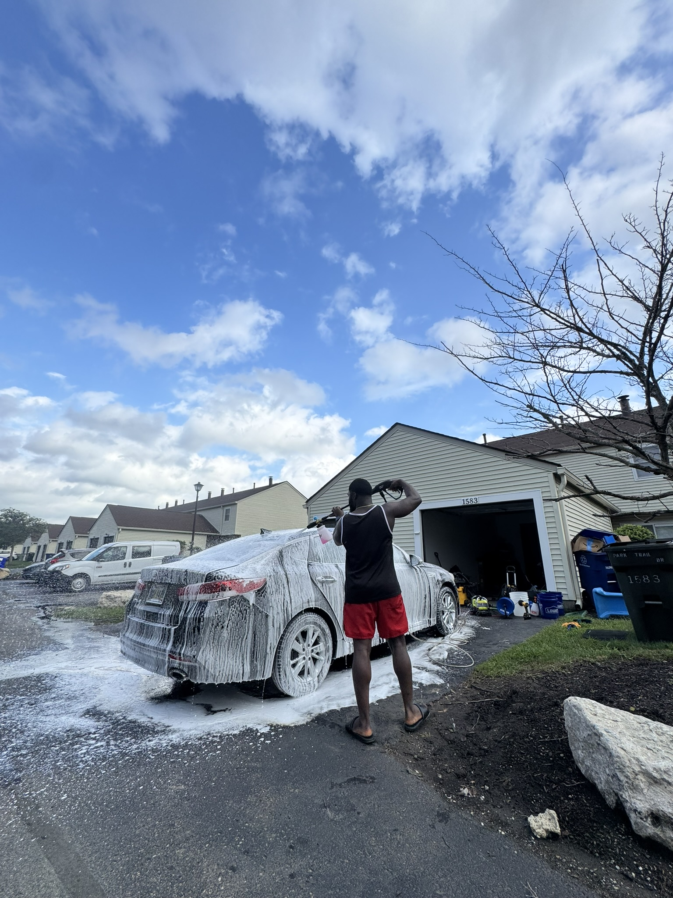

✦
Basic Wash
Foam pre-soak, hand wash, wheel and tire cleaning, and a gloss-enhancing finish for everyday maintenance.


K&F Car Detailing was founded with one goal in mind: to help drivers protect and preserve the beauty of their vehicles.
Our team treats each vehicle like it is our own. We believe true detailing is not only about shine — it is about maintenance, protection, and pride.
We use carefully selected products to ensure your vehicle looks exceptional and stays protected for the long run.
Whether you need a quick refresh for daily driving or a full premium correction and protection package, we have packages that can fit your car's condition, finish, and long-term goals.
Foam pre-soak, hand wash, wheel and tire cleaning, and a gloss-enhancing finish for everyday maintenance.
Deep-cleaning for carpets, leather, plastics, and trim with conditioning products that keep the cabin refreshed.
Complete exterior treatment with waxing and paint protection for lasting shine and defense against contaminants.
Decontamination and multi-stage polishing to remove swirl marks, scratches, and oxidation for a pristine finish.
Premium interior restoration with deep steam cleaning, leather conditioning, and stain treatment for like-new condition.
Protective ceramic layers that repel water, dirt, and road contaminants while enhancing depth and clarity for months.
We identify problem areas, paint condition, interior wear, and coating needs before treatment starts.
We restore affected surfaces with safe, paint-friendly methods designed to preserve the finish.
We finish with premium sealants or ceramic protection to keep your vehicle looking sharp longer.